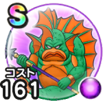

グラコスエビル
あぶない水着イベント25こころ最大コスト+4じゅもんダメージ+7%ザバ属性じゅもんダメージ+10%ヒャド属性じゅもんダメージ+5%魔力の暴走率+3%ザバ属性耐性+5%ターン開始時MPを8回復する / 9.0点
くわしい特徴
【ランク特殊効果】 こころ最大コスト+4じゅもんダメージ+7%ザバ属性じゅもんダメージ+10%ヒャド属性じゅもんダメージ+5%魔力の暴走率+3%ザバ属性耐性+5%ターン開始時MPを8回復する

あぶない水着イベント25こころ最大コスト+4じゅもんダメージ+7%ザバ属性じゅもんダメージ+10%ヒャド属性じゅもんダメージ+5%魔力の暴走率+3%ザバ属性耐性+5%ターン開始時MPを8回復する / 9.0点
【ランク特殊効果】 こころ最大コスト+4じゅもんダメージ+7%ザバ属性じゅもんダメージ+10%ヒャド属性じゅもんダメージ+5%魔力の暴走率+3%ザバ属性耐性+5%ターン開始時MPを8回復する